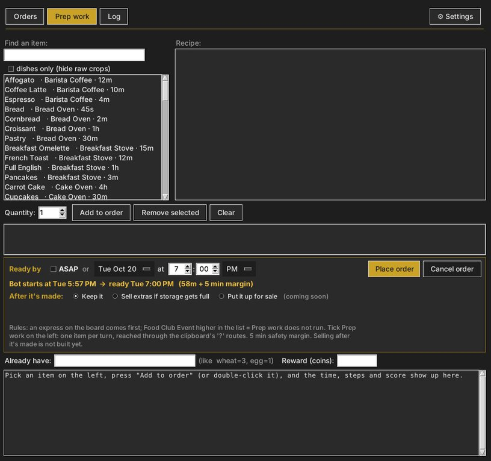

AutoFoodStreet · design report · October 20, 2026
Redesigning the Prep Work Tab
The Prep tab grew in layers: a recipe book, then an order form, then a scheduler, then the engine's status. This report takes it apart and puts it back together as one simple list.
01Today
real screenshot the current Prep work tab

What makes it feel cluttered
- Your actual list is the smallest thing on the screen. The empty box under the buttons is your order. The biggest areas are an empty Recipe pane and a large text box.
- Eleven controls to add one item: search, a "dishes only" box, the list, quantity, Add, Remove selected, Clear, Already have, Reward, plus two big read-only panes.
- Leftovers from the old Recipe Book. "Already have" and "Reward (coins)" belong to the time calculator. The bot now reads stock itself.
- A paragraph of rules sits in the middle of the form. You read it once, then it's in the way forever.
- White Windows boxes on a dark window: the search field, the list and the text panes break the theme.
- No progress on screen. The engine knows "cooking 1/3" and "done (have 8)", but you have to dig for it.
02The redesign
Two columns. On the left, pick things. On the right, your list, which is the status board. Everything you set once (rules, recipe details) moves behind a hover ⓘ.
mock-up new Prep work tab, while it is running
OrdersPrep workLog⚙ Settings
Add items ⓘ
⌕ search: chee…
AllDishesCropsPet food
Cheese
Dairy · 3m
Cheesecake
Cake Oven · 45m
Cheese Pizza
Pizza Oven · 12m
Mac & Cheese
Breakfast Stove · 20m
Cheesecake · Cake Oven · 45 min
needs: Cheese ×2, Egg ×1, Sugar ×1
hover card shown instead of the big Recipe pane
needs: Cheese ×2, Egg ×1, Sugar ×1
hover card shown instead of the big Recipe pane
Keep in stock ⓘ
Cheese
Dairy · have 8
−8+
✓ stockedMilk
Cow Shed · have 2 · 1 cooking
−3+
cookingCornbread
Bread Oven · next look 4 min
−2+
waitingCoffee Latte
Barista Coffee · needs Milk first
−1+
making milkApple Juice
Smoothie Bar · needs apples (apple picking: next to train)
−2+
blockedStartASAPAt a timeready about Tue 7:00 PM
Keep it uprefill whenever stock drops (pets, orders)
5 items · 2 stocked · 2 cooking · 1 blockedClear list Save list
Line states
| Pill | Means |
|---|---|
| waiting | Not visited yet, or waiting for its next look. |
| cooking | Queued, with a progress bar: have plus cooking, out of what you want. |
| ✓ stocked | You have at least your number. With "Keep it up" on, it rechecks later. |
| blocked | Something the bot can't do itself, in plain words: "needs apples", "no route from the clipboard yet". |
03Where everything goes
| Today | New design |
|---|---|
| Search + "dishes only" checkbox | Search plus filter chips (All · Dishes · Crops · Pet food) |
| Big list + Quantity + Add to order | One + per row; the amount is set on the right with − / + |
| Recipe pane (big, usually empty) | A hover card on the item name |
| Remove selected / Clear | − down to 0 removes a line; one "Clear list" button |
| Ready by: date, hour, minute, AM/PM, ASAP | One switch: ASAP / At a time (the time pickers show only for "At a time") |
| After it's made: keep / sell extras / sell | Hidden until selling is built (it was a placeholder) |
| Rules paragraph | The ⓘ next to "Keep in stock" |
| Already have / Reward (coins) | Removed: the bot reads stock itself (simulator step 1) |
| Big text box (time, steps, score) | One summary line at the bottom; the step-by-step lives in the Log tab |
| Place order / Cancel order | "Save list": saving it is placing it, and the list stays editable while it runs |
| — | New: "Keep it up", the stock-up loop we talked about (refill when pets and orders use things up) |
Same rules underneath. Express first, Food Club higher in the Jobs list wins, coins only,
never gems. The redesign only changes how the tab looks and how the list is edited.
04Questions for you
- "Keep it up" on by default? I'd say yes: it's what you described with the milk and the pets.
- Pet food chip: which items do your pets eat? Then I can make that filter real.
- Start at a time: keep it? With "Keep it up" most lists would just be ASAP.
- Apples (your idea): teach the bot to pick apples. When the fast-travel lands on a tree that's already picked, it looks for ripe apples on the trees nearby and taps those instead. Then Apple Juice stops showing "blocked".
- Build order: I'd build the right side (your list with live status) first, show you a screenshot, then the left side.